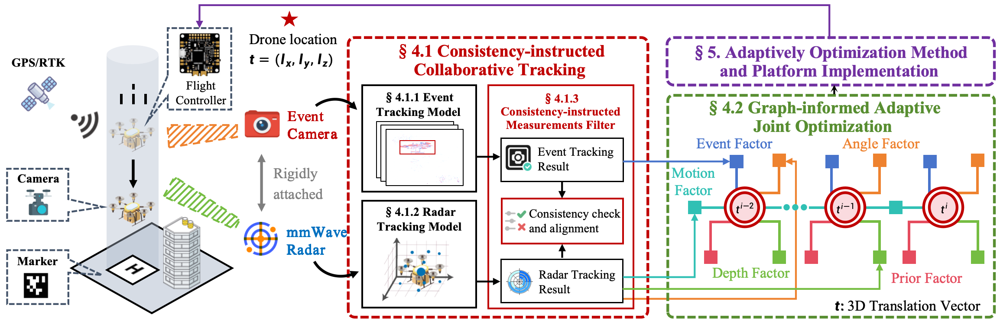

Event cameras are bio-inspired sensors that capture data asynchronously and independently at the pixel level. Unlike conventional cameras that sample images at a fixed time interval, event cameras register only changes in pixel brightness as they occur, producing a stream of events with microsecond temporal precision.
The EventLoc comprises two key modules:
(i) The CCT (Consistency-instructed Collaborative Tracking) for noise filtering and roughly localization of the drone. This module utilizes consistent information of both modalities to eliminate noise and error detections, and roughly localize the drone.
(ii) The GAJO (Graph-informed Adaptive Joint Optimization) for fine localization and trajectory optimization of the drone. This module employs the complementary information from both modalities to unleash the potential of event camera and mmWave radar in landing drone localization.
